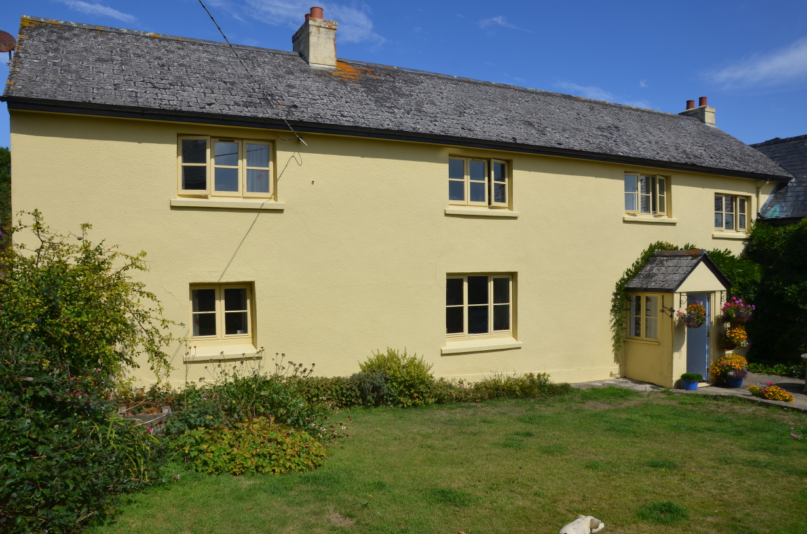
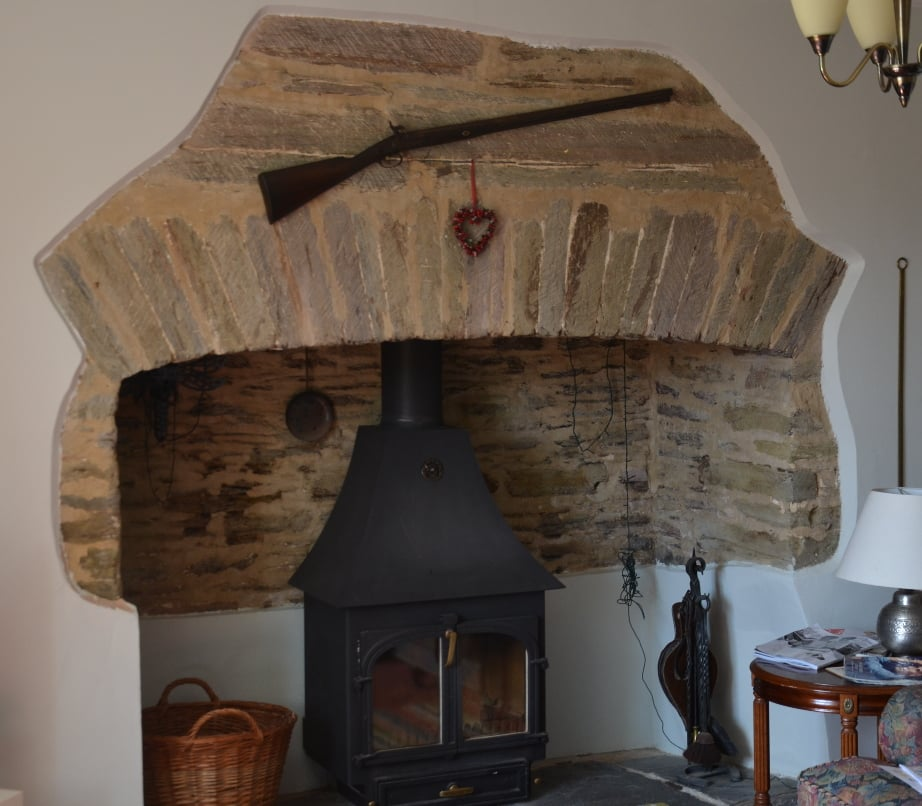
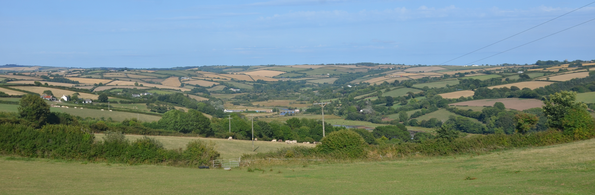
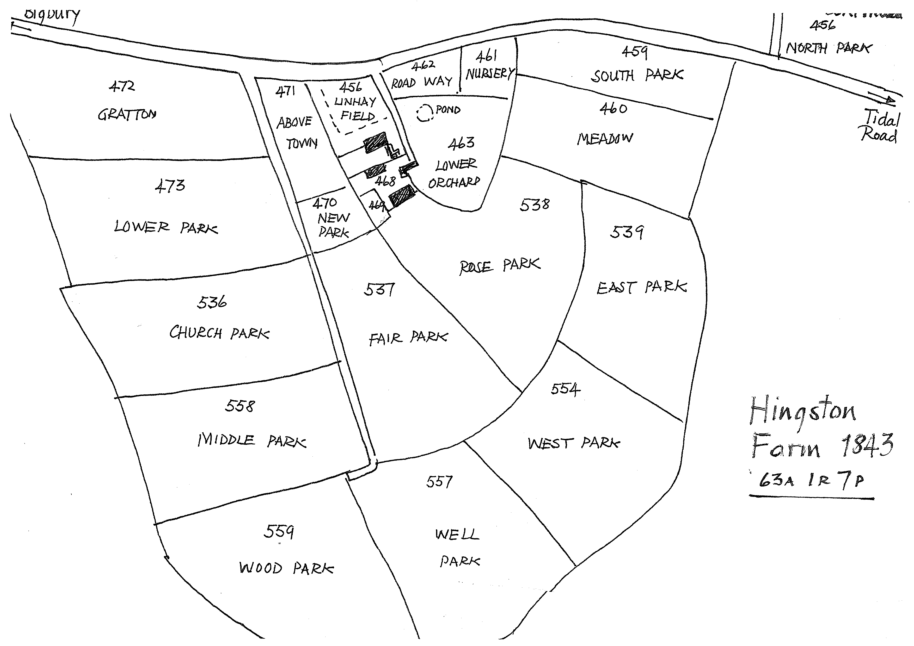

The direct route from Aveton Gifford to Bigbury runs alongside the River Avon and is only passable at low tide, being flooded to a depth of several feet at high tide. There is then a steep climb up Stakes Hill, towards the hamlet of St Ann's Chapel and the village of Bigbury. Hingston Farm is near the top of this hill.

The farmhouse sits in a small hollow that shelters the house from the prevailing south-westerly winds, and in days gone by also hid it from the sea-raiders, whether Viking, Irish or Barbary Pirates, all of whom attacked the nearby coast at various times. It sits on a spring that supplied the farm with its water. The fields around the farm slope gently and are suitable for arable farming, but get much steeper as one gets closer to the river and thus are only suitable as pasture. This has always been a good place to farm.
The house is listed Grade II, and gives no indication of its age although the listing describes it as " probably C17 ", and it has clearly been extended and improved many times over the years. It has many features of a Devon Longhouse that would originally have had a single storey with a central cross-passage, and probably originally had a room on one side for the family and one on the other for the animals. Over the years, the animals were moved elsewhere, an upper floor was added, and the building extended at the ends, but it remains only one room deep.
The full listing description (written in 1990) says:- "Farmhouse and attached outbuilding. Probably C17, but much C19 modification including refenestration. Rendered rubble or cob, some exposed painted rubble; slate low pitched roof to farmhouse and corrugated iron to outbuilding. Farm-house possibly in two stages, with an outbuilding at right angles, right. Two storeys, 4 windows; 2 of 3-light casements with horizontal bars, one C20 casement, left of C20 glazed door in gabled porch to bay 3; the fourth bay is at a lower level. Gable stack to right, and stack between bays 1 and 2 - possibly the original outer gable. Back has an outshot with bread oven and for stair, with a second similar at far end; two 2-light casements at first floor. Gable end has a 3-light above a lean-to porch, and a 2-light. Barn frontage towards farmhouse is in 2 storeys, with a steep roof pitch probably to early structure, with a 4-light C19 at first floor above a lean-to garage (not of special interest), and a first floor plank door on set of sandstone steps, with a pitching door to the right above a blocked opening. The end gable has a plank door to a concrete lintol. Interior not inspected.". The house has been modernised since this description.
It seems unlikely that the house is built from cob, which is normally associated with rounded corners and uneven walls, and the only exposed stonework is around the internal fireplace that shows that the walls are made from uncoursed masonry using Dartmouth slate that was probably quarried locally.

The front of the house faces south and onto the farm buildings, but there is a spectacular view from the garden to the east, looking out over the valley of the River Avon (below); the owners refer to this view as "the balcony of the world", and you can see why. The panorama has probably changed very little since it was occupied by our Hingston ancestors. Dartmoor is just round the corner on the left, while the sea at Bigbury Bay is just over the hill to the right. The copse on the skyline at the left of the photo is at Stanborough Camp, an Iron Age hillfort just above Chilley Farm, and close to the area where the original Hingstons in Tree HH lived. On the skyline to the right is the tower of Churchstow Church, at one time the principal church in the area. The largest man-made object in view is Aveton Gifford Bridge, built in the 15th Century. There would probably have been more trees in the view originally but little else has changed.

The 1843 Tithe Map of Bigbury shows the extent of the farm at that date and gives the field names. Roger Grimley, who gave me a copy of the map, and knows most about the history of Bigbury, believes that "Park" in many of the names indicates a field that was taken in from the surrounding woodland, and the concentric layout of the fields shows successive periods of clearing.

Hingston appears never to have been a manor; there were two in the parish - Bigbury Court and Houghton . Under the feudal system no one owned land; instead it was held "in fief" from the Lord of the Manor, who in turn held it from someone further up the tree, and eventually from the King. Everyone had a duty to serve whoever was above them in the system, but in return had the right to protection. The Lord of the Manor was also the arbiter of the law, settling minor disputes.
So what manor did Hingston belong to, and who was the Lord? The last Hingston we know who lived here was Robert Hengeston, who died in 1488. An Inquisition Post Mortem (IPM) was held on his death; this was an inquiry held after the death of a tenant in chief when it wasn't clear who was to succeed to the property and who would perform the duties owed to the Lord in return. The IPM states that Robert Hengeston "long before his death" was "seized of a messuage and 4 furlongs in Hengeston (Hingston), with common pasture in Bogbury (Bigbury); ... likewise of 6 messuages and 4 furlongs in Howton , a messuage and 3 furlongs in Noddon and Holwell in the parish of Bygbury" [as well as much other property]. The land "was held of the heirs of William Bigbury in free socage of the manor of Bigbury". "Socage" was one of the land tenure forms in the feudal system; the land was held in exchange for a clearly defined, fixed payment to be made at specified intervals to his feudal lord. In effect it meant "rent" and as feudalism declined it became the normal form of tenure in England. A "messuage" was essentially a family house and its various outbuildings and courtyards; Robert held 20 of them of which Hingston was only one. One of his properties in Holbeton was held of Margaret, Countess of Richmond, better known to history as Margaret Beaufort, mother of Henry 7th, founder of the Tudor dynasty, while Robert in turn enfeoffed (i.e. acted as landlord of) Sir Philip Courteney, Edward Courteney esq., Thos. Coterell esq., and Will. Fortescu esq. The Courteneys were the family of the Earl of Devon and all of these were people descended from the old Anglo-Norman aristocracy. Robert Hengeston may not have lived in a manor house but he was clearly a man of some substance and moved in influential circles.
There are a number of religious sites nearby. At the bottom of Stakes Hill and next to the Hingston land is the site of St Milburga's Oratory . This was a small Chapel dedicated to St Milburge who was the eldest daughter of Merewalh, (which means "famous Welshman"), supposedly the first king of the Magonscetan in Herefordshire (c. 660). She and her sisters, Mildred and Milgith devoted themselves to a life of piety and religion and all are named as Saints. Milburge became a nun at Wenlock in Shropshire, where her uncle, King Wulfhere, built her a monastery, over which she presided and where she was buried. Her abbey was destroyed by the Danes but it was restored some centuries later by the famous Leofric, Earl of Mercia. After the Conquest it was again rebuilt by Robert Montgomery, but the tomb of St Milburge lay hidden under the ruins of the first abbey, until it was accidentally discovered in the twelfth century. It seems unlikely that she ever came to Bigbury, but something of a cult developed after her death and flourished amongst the British (i.e. Celtic as opposed to Saxon) and it is possible that a small chapel was erected in her honour here. The border between Saxon (Devon) and Celtic (Cornwall) is traditionally given as the River Tamar, but the dedication to St Milburga may indicate the presence of a Celtic population by the River Avon. The 'capella sancte milburge' is mentioned in the Episcopal registers of the diocese of Exeter in 1381, while F.C. Hingeston-Randolph said that the chapel was licensed by Bishop Stafford on 18 Oct 1395 (Western Antiquary Vol. 8(1888-9) p94). It was in good condition up to a few years prior to 1888, but was then demolished apart from some small portions of the walls. A rectangular building is depicted on the 1843 Bigbury tithe map and a building of similar extent and position is also illustrated on the 1st Edition 25 inch Ordnance Survey map of the 1880s but had been demolished by the time of the 2nd Edition (c.1905). The plot of land is now known as Milburn Orchard and the site of the chapel lies in the grounds of a modern residence confusingly called St Milburga's Oratory. The area has been landscaped and there is no evidence of walling or rubble at the indicated site.
Holywell and St Ann's Chapel are located about a km from Hingston Farm. The well, dedicated to St Ann , is an unusual survival. Its design, with a sunken reservoir, spilling out via a conduit in the side, is typical of wells whose waters were believed to have healing powers. This is supported by the presence of the 15th century chapel of St Ann, 200m to the south west (now incorporated into the 19th century Pickwick Inn). A Neolithic long barrow and two Bronze Age round barrows lie 400m to the south east of the well. The proximity of these barrows to the holy well, its chapel and Bigbury parish church which is 800m to the south east, suggests continuity of a more ancient tradition of veneration in the area; other holy wells lie close to prehistoric ritual monuments. The well is located in a field SSE of Holwell Farm. It appears as a marshy depression in the corner of the field and measures 43m from east to west and 58m from north to south. A scarp into the hillslope on the west side is up to 2m high. The depression now contains two concrete tanks that catch the water for farm purposes; the southern tank is constructed within a sunken stone-walled enclosure, built around a natural spring. Brick steps originally led down into the water on its west side, but these have now been covered. Water from this sunken reservoir still flows to a well head on the north west side of the farm track.
Burgh (or Borough) Island , a tidal island off the shore of Bigbury-on-Sea, was formerly known as St Michael's Island and there was once a chapel on the summit of the island dedicated to St Michael. Note that St Michael's Mount in Cornwall, Mont St Michel in Normandy and Skellig Michael off the coast of SW Ireland all occupy similar offshore locations and all have the same dedication. It is believed the chapel on Burgh Island may have been occupied by a monk living as a hermit in a fairly bleak and inhospitable location. There are reports that there was a monastery on the island but Roger Grimley believes this was not correct.
Hingston Farm is today owned by the Cullen family, who also own Bigbury
Court, and rather than the 63 acres shown on the 1843 Tithe map, now farm
400 acres. They have built themselves a modern home in one of the
original barns of the farm, and Hingston Farmhouse itself can be rented as
a holiday home. I can thoroughly recommend it!
Return to Hingston One-Name Study
Written August 2018. C J Burgoyne